오프라인 팝업처럼 「들어가서 구경하는」 느낌을
온라인에 만들고,
그 안에서 실물 상품을 주문·배송까지
이어 주는 플랫폼입니다.
2026년 7월
※ 아래 그림 중 일부는 이미 동작하는 화면,
일부는 완성 모습을 미리 그린 시안입니다.
POP-UP CUBE
이 문서에서 말하려는 것
이 플랫폼은 온라인 팝업스토어를 열고 실물을 파는 쇼핑몰입니다.
일반 회원은 캐릭터로 매장에 들어가 돌아다니고, 테이블·옷걸이 앞에서 상품을 보고 삽니다.
스토어 관리자는 팝업을 열고, 상품을 올리고, 주문을 처리합니다.
픽셀로 그린 매장, 채팅, 구매 후 작은 이벤트는 쇼핑을 더 재미있게 만드는 요소이고,
결국 중심은 실물 구매 · 배송 · 주문 · 스토어 관리입니다.
일반 회원은 앱 · 스토어 관리는 PC 웹
매장·상품·주문 관리는 PC 웹(스토어 관리자 전용)에서 하고,
일반 회원의 쇼핑·팝업 입장은 모바일 앱에서 합니다.
판매자용 관리 사이트와 회원용 앱을 나누는 일반 쇼핑몰과 비슷한 구조입니다.
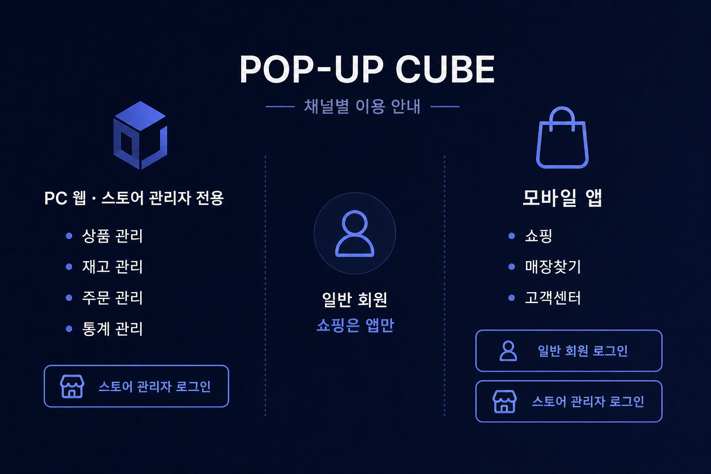
완성 시안PC 웹 = 스토어 관리 · 모바일 앱 = 일반 회원 · 스토어 관리자
1. 어떻게 들어오나 — 웹 / 앱 로그인
PC 웹은 스토어를 관리하는 사이트입니다. 로그인은 스토어 관리자 로그인만 있습니다.
모바일 앱에서는 일반 회원 로그인과 스토어 관리자 로그인을 나눕니다.
일반 회원은 팝업에 들어가 사고, 스토어 관리자도 앱으로 자기 매장에 들어가면 닉네임에 왕관 등 표시가 납니다.
완성 시안PC 웹 — 스토어 관리자 로그인만 (일반 회원 로그인 없음)
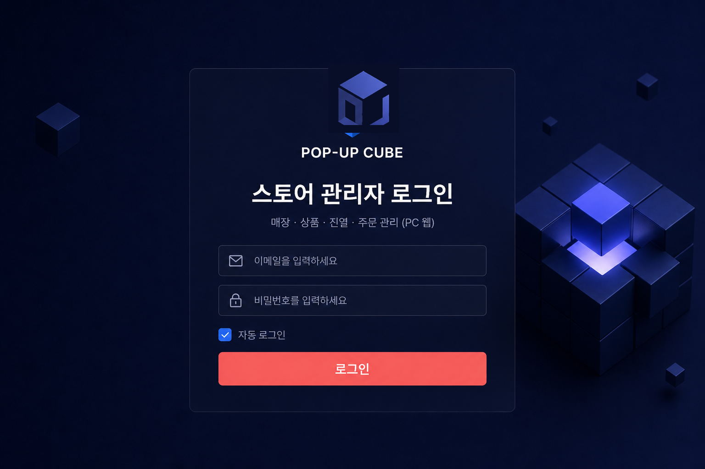
완성 시안PC 웹 — 스토어 관리자 로그인 (+ 자동 로그인)
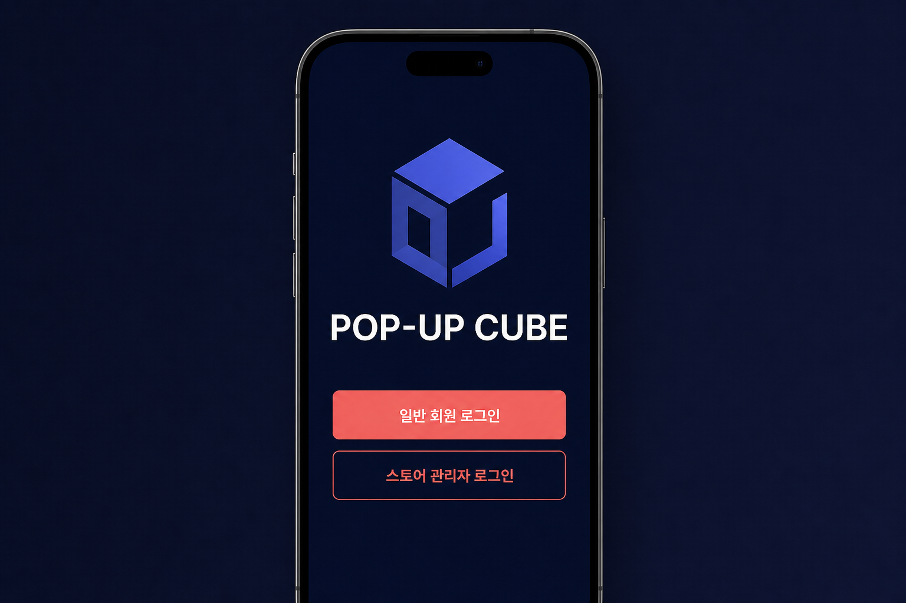
모바일 시안앱 — 일반 회원 로그인 / 스토어 관리자 로그인
2. 왜 이런 플랫폼이 필요한가
오프라인 팝업은 분위기가 좋지만, 기간과 장소가 짧고, 멀리 사는 사람은 오기 어렵습니다. 반대로 일반 쇼핑몰은 편하지만 「팝업에 와 본」 느낌이 약합니다.
오프라인 팝업만으로 아쉬운 점
플랫폼 방식
기간·장소가 한정됨
링크로 언제든, 어디서든 입장
줄 서기, 이동 부담
집에서도 매장을 「들어가」 구경
한 번 가본 사람 중심
다시 들어오고, 다른 사람과 같이 볼 수 있음
자사몰은 상품 목록 위주
공간·진열·이벤트까지 있는 「팝업」 느낌
가상세계만 있으면 실물 판매와 멀어짐
구경한 뒤 실물 주문·배송까지 한곳에서
3. 일반 쇼핑몰·게임형 서비스와 무엇이 다른가
일반 쇼핑몰
게임형 가상세계
플랫폼
핵심
빨리 구매
공간에서 놀기
들어가 보고, 실물도 삼
매장
상품 목록
맵 제작이 무거움
스토어 관리자가 팝업 공간을 꾸밈
이벤트
쿠폰
게임 패스
구매 후 할인 또는 사은품(선택)
「팝업에 온 기분」으로 실물을 사고, 산 뒤에도 공간·아바타에서 그 경험이 이어지는 플랫폼입니다.
4. 일반 회원은 이렇게 이용합니다 (모바일 앱)
4-1. 로그인 · 동네별 팝업 고르기
일반 회원은 모바일 앱에서 일반 회원 로그인하면 지금 열려 있는 여러 팝업이 보입니다.
같은 브랜드라도 동네(지역)마다 다른 팝업을 열 수 있습니다.
(예: 성수동 GUCCI, 청담 GUCCI — 별개 매장)
카드를 누르면 매장 정보를 보고, 「입장하기」로 그 팝업 안으로 들어갑니다.
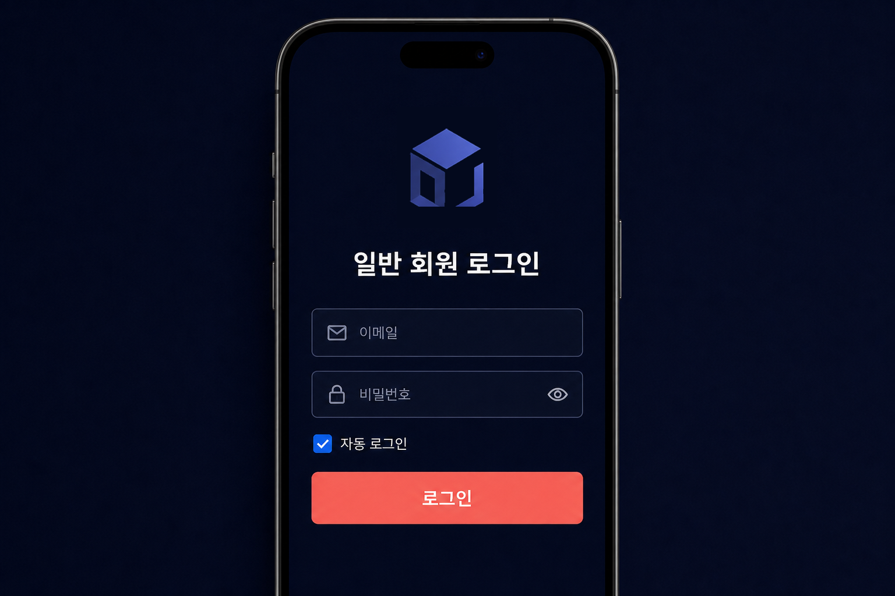
모바일 시안앱 — 일반 회원 로그인 (+ 자동 로그인)
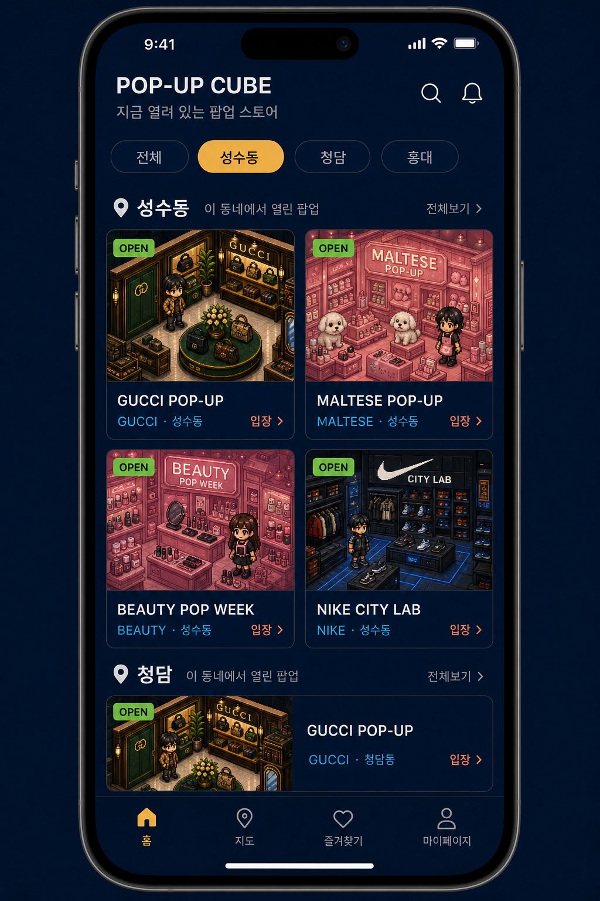
모바일 시안앱 홈 — 동네 필터(성수동·청담·홍대…) + 구역별 열린 팝업 목록
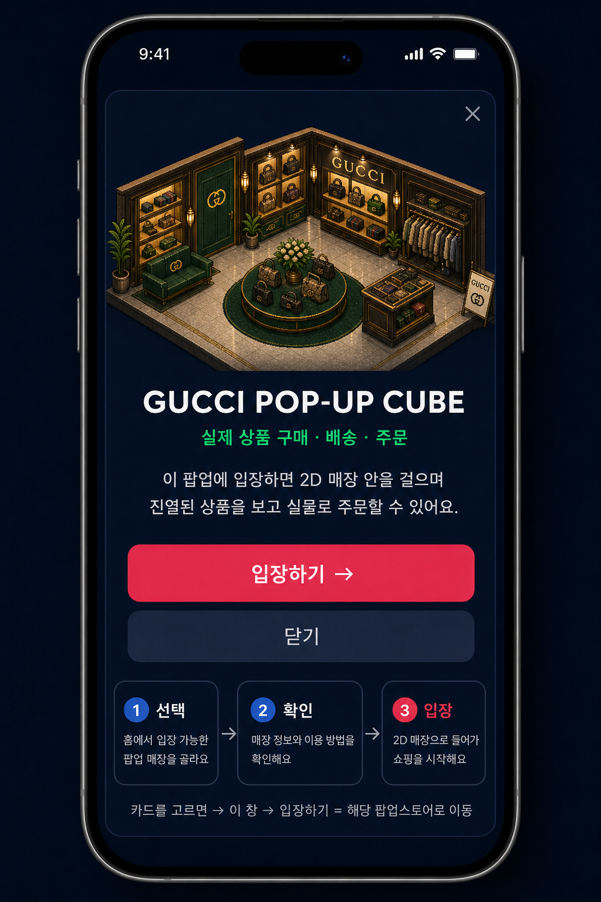
모바일 시안입장 확인 — 팝업 선택 후 매장 정보 확인, 입장
4-2. 매장 안을 걸어 다니며 본다
들어가면 픽셀로 그린 팝업 매장이 나옵니다. 옆방·옆 공간이 살짝 보이는 구조로 공간감을 줍니다.
캐릭터로 이동하고, 같은 매장의 다른 사람과 채팅할 수 있습니다. 화면 아래에는 자주 쓰는 버튼만 둡니다.
상호작용 — 앞에 선 테이블·옷걸이에 올려둔 상품 보기
채팅 — 같은 매장 사람들과 대화
장바구니 — 담아 둔 상품·결제
전체 상품 — 이 매장 상품을 한눈에 보기
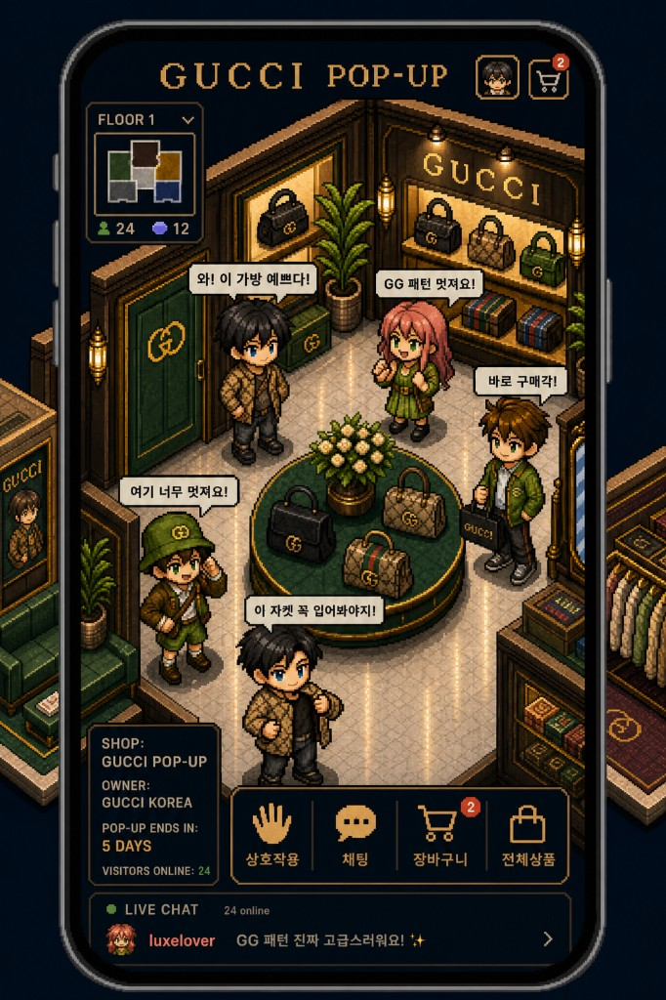
모바일 시안앱 — 팝업 매장 안 · 이동·채팅·쇼핑
4-3. 진열된 상품을 고른다
오프라인처럼 테이블이나 옷걸이 앞에 서서 상호작용하면,
그 위에 올려둔 상품만 뜹니다.
상품을 고른 뒤 장바구니에 담고, 바로 구매하거나 착용해보기를 선택할 수 있습니다.
착용해보기는 아바타에 입혀 미리 보는 기능입니다.
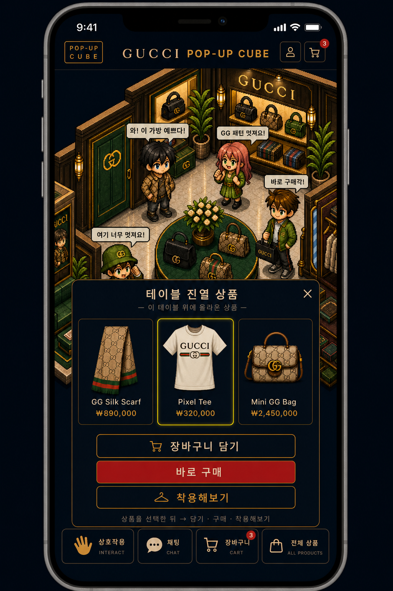
모바일 시안앱 — 테이블 앞에서 진열 상품 선택, 담기·구매·착용해보기
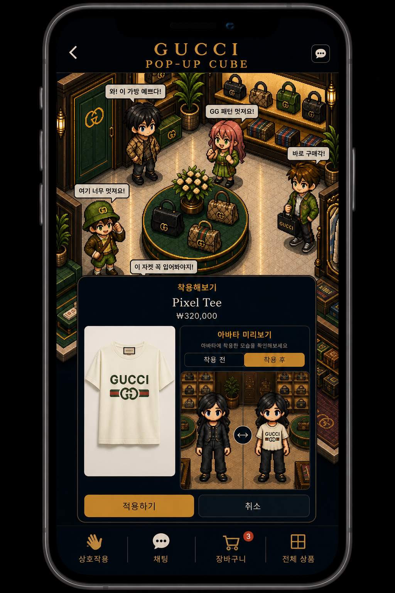
모바일 시안앱 — 착용해보기 · 아바타에 입혀 본 모습
4-4. 상품 상세페이지
진열 팝업의 「자세히 보기」나 전체 상품 목록의 「상세페이지 보기」,
또는 상품 카드를 누르면 일반 쇼핑몰과 같은 상품 상세로 이어집니다.
여기서는 월드용 픽셀 그림이 아니라 실제 상품 사진으로 설명·옵션·가격을 보여 줍니다.
화면 아래에는 장바구니 담기와 바로 구매가 고정되고,
그 아래에 착용해보기로 아바타 미리보기로 넘어갈 수 있습니다.
모바일 시안앱 — 상품 상세 · 실사 갤러리 · 하단 담기/구매/착용해보기
앞에서 본 홈·매장·쇼핑 흐름은 모두 모바일 앱 기준입니다.
쇼핑은 실사, 팝업 월드는 픽셀 — 같은 상품이라도 용도에 따라 이미지를 나눕니다.
5. 사는 흐름 — 장바구니 · 배송 · 혜택 (모바일 앱)
결제·배송은 일반 쇼핑몰과 같습니다. 상품을 담고, 배송지를 넣고, 주문이 남습니다.
5-1. 전체 상품 · 장바구니 · 결제
HUD의 「전체 상품」이나 진열에서 고른 뒤 상세를 거치면 장바구니·결제로 이어집니다.
목록·썸네일도 실사 사진 기준입니다.
각 상품 카드에는 담기 아래 상세페이지 보기 버튼이 있어
바로 상품 상세(§4-4)로 이동할 수 있습니다.
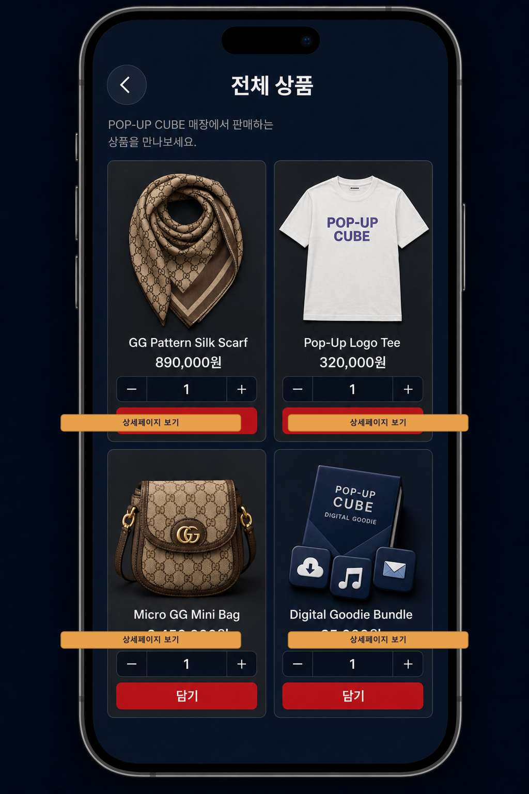
모바일 시안앱 — 매장 전체 상품 목록 · 담기 + 상세페이지 보기
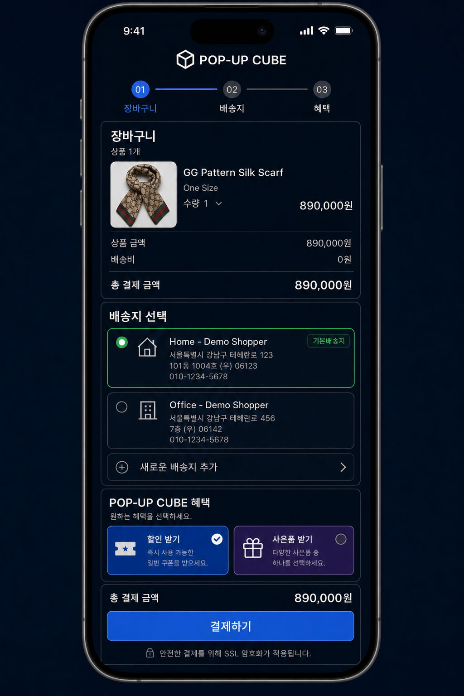
모바일 시안앱 — 장바구니, 배송지, 혜택 선택
5-2. 배송지
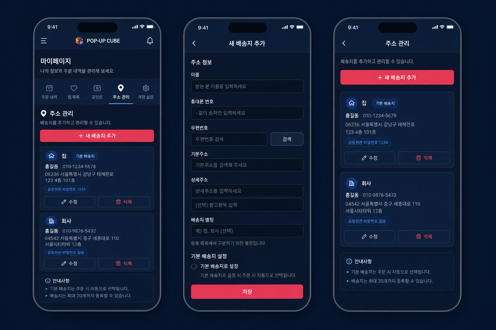
모바일 시안앱 — 마이페이지 · 배송지 등록·관리
5-3. 구매 후 혜택
실물 결제가 끝난 뒤, 일반 회원은 혜택 형태만 고릅니다.
실물 상품 구매·결제
그다음 — 할인(확정) 또는 사은품 뽑기(추가 결제 없음) 중 선택
사은품 뽑기는 결제가 끝난 뒤 선택하는 혜택입니다. 추가 결제 없이, 이미 산 주문에 붙는 사은품·할인에 가깝습니다.
6. 스토어 관리자는 무엇을 하나 (관리 = PC 웹)
스토어 관리자는 PC 웹에서 스토어 관리자 로그인 후 팝업을 열고, 상품을 올리고,
매장 안 진열 가구(테이블·옷걸이 등)에 상품을 배치하며,
들어온 주문을 확인합니다.
앱에서도 스토어 관리자 로그인으로 자기 매장에 들어가 볼 수 있고, 본인 매장에서는 닉네임에 왕관 등이 표시됩니다.
매장 만들기 — 이름, 대표 이미지, 설명, 팝업 지역(동네) 지정
상품 등록 — 기본정보, 상세 설명, 실사 이미지, 2D 월드용 스프라이트, 앱 미리보기
진열 배치 — 테이블·옷걸이에 상품을 올리고 순서 바꾸기
주문 관리 — 누가, 어디로, 무엇을 샀는지 확인
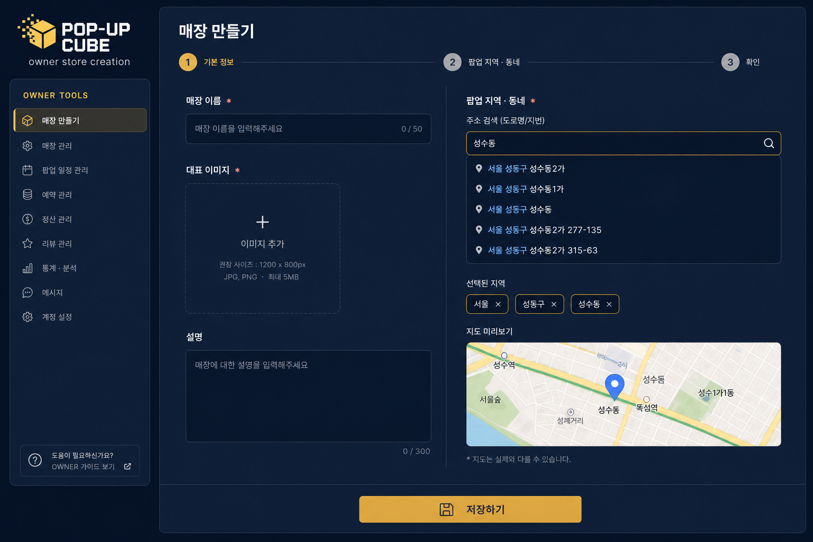
완성 시안스토어 관리 — 매장 개설 시 주소 검색으로 팝업 지역(동네) 지정
6-1. 상품 등록 · 상세 작성
점주는 PC 웹에서 상품을 등록·수정할 때 탭으로 나눠 한곳에서 마칩니다.
아래 순서대로 작성하고, 각 탭마다 손님이 보게 될 화면과 연결됩니다.
기본정보 — 이름·가격·판매 여부·카테고리
상세 설명 — 앱 상품 상세에 나올 본문
이미지(실사) — 쇼핑·주문·목록용 사진
2D 월드용 — 팝업 안 진열·착용용 픽셀 스프라이트
미리보기 — 앱 상세(실사)와 2D 월드(픽셀)를 나란히 확인
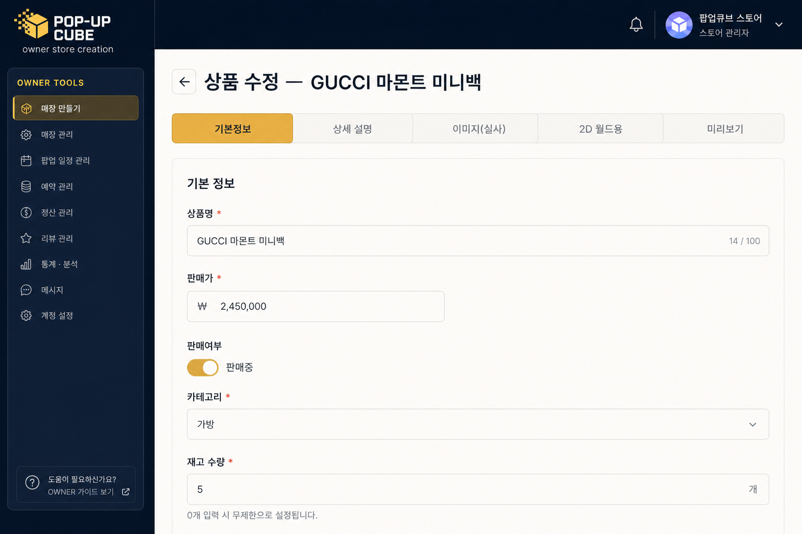
완성 시안① 기본정보 — 상품명, 판매가, 판매 여부, 카테고리, 재고
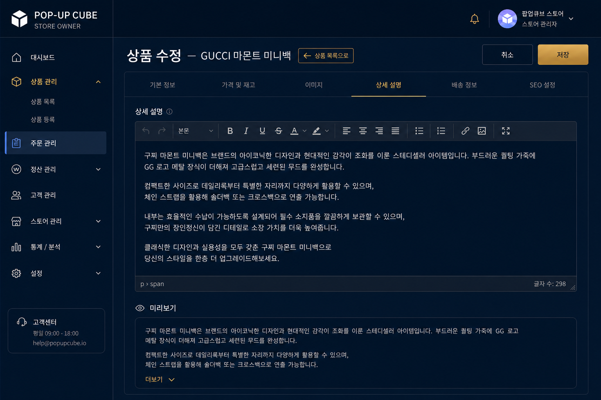
완성 시안② 상세 설명 — 앱 상세 본문 작성·미리보기
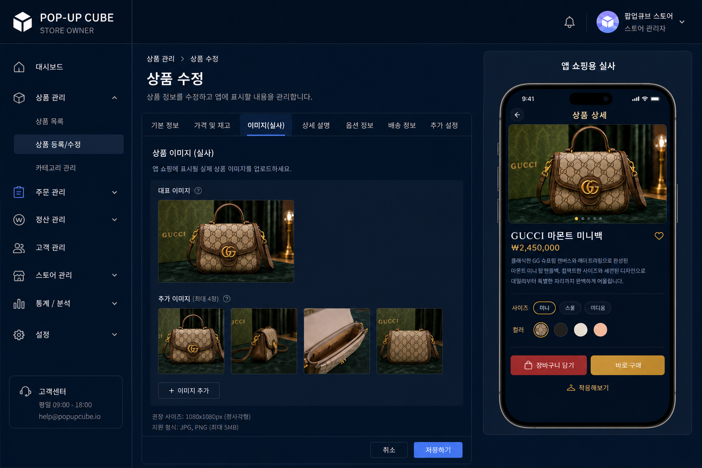
완성 시안③ 이미지(실사) — 쇼핑용 사진 업로드 · 오른쪽 앱 상세(실사) 확인
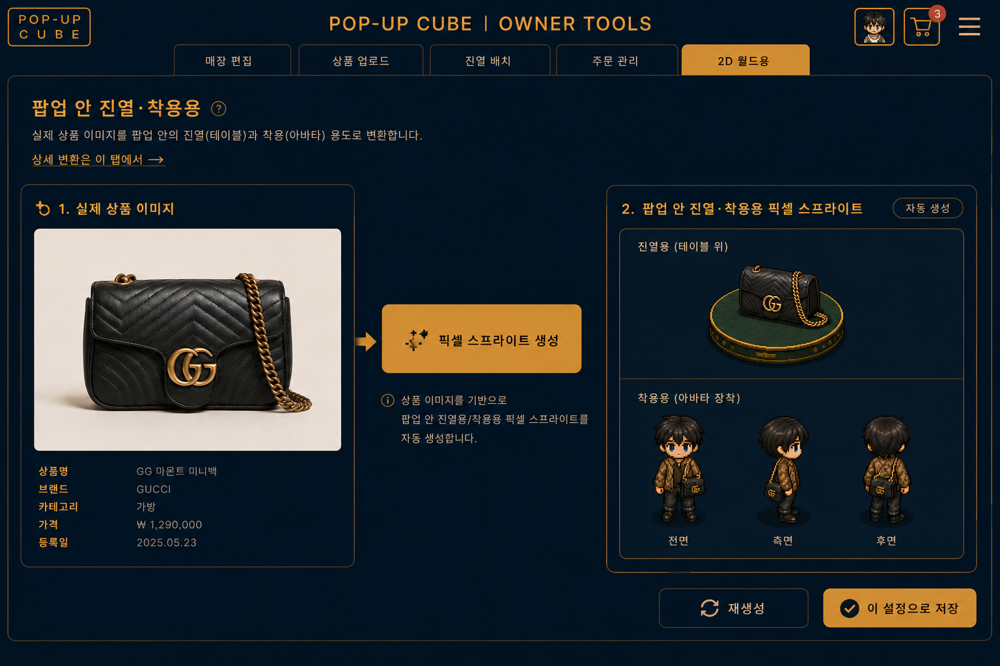
완성 시안④ 2D 월드용 — 실사에서 진열·착용용 픽셀 스프라이트 생성
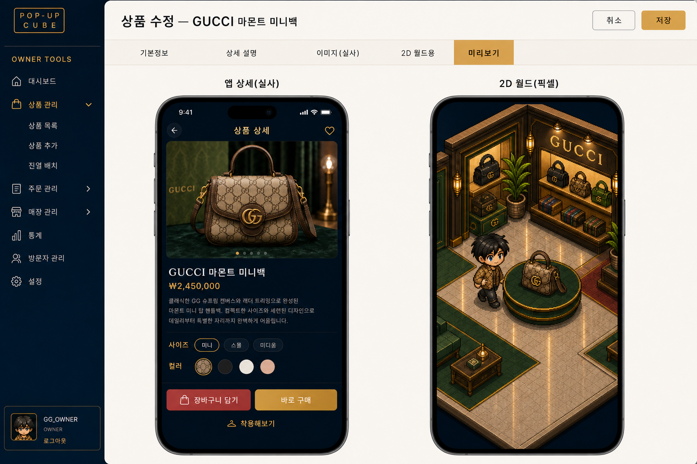
완성 시안⑤ 미리보기 — 왼쪽 앱 상세(실사) / 오른쪽 2D 월드(픽셀) 나란히 확인
손님이 앱에서 보는 상세와 월드에서 보는 픽셀은 같은 상품 등록 화면에서 연결합니다.
2D 변환·4방향 검수 등 자세한 흐름은 다음 절에서 이어집니다.
6-2. 2D 월드용 — 실사에서 픽셀 스프라이트 만들기
「2D 월드용」탭에서는 대표 실사 사진을 바탕으로 팝업 안에 쓸 픽셀 스프라이트를 만듭니다.
점주만 변환·승인할 수 있고, 손님은 완성된 월드·착용해보기에서만 봅니다.
의류·가방 등은 전·후·좌·우 네 방향 미리보기로 검수한 뒤 월드에 반영합니다.
테이블 위 진열용은 방향이 적은 단순 스프라이트로도 충분합니다.
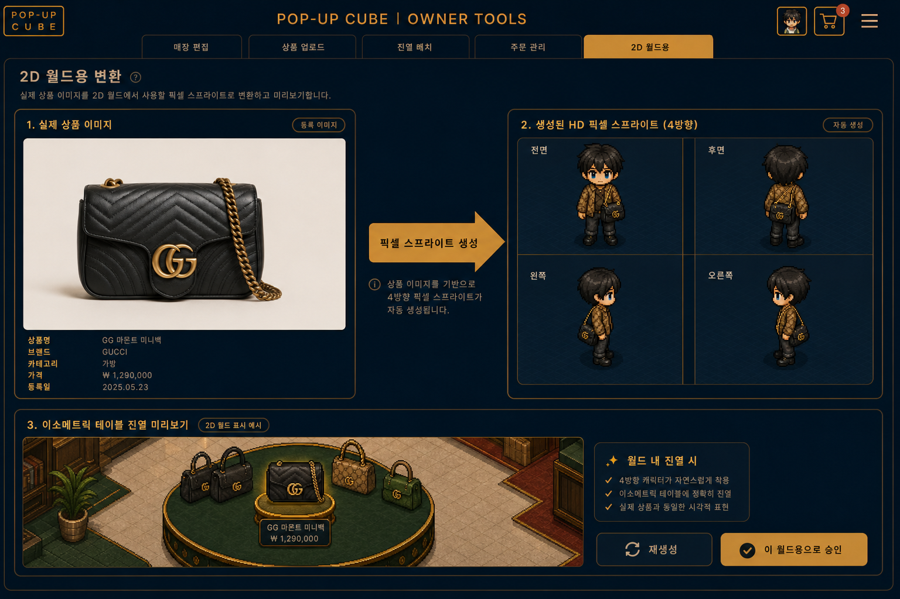
완성 시안스토어 관리 — 2D 월드용 · 실사→픽셀 변환 · 4방향·진열 미리보기 · 승인
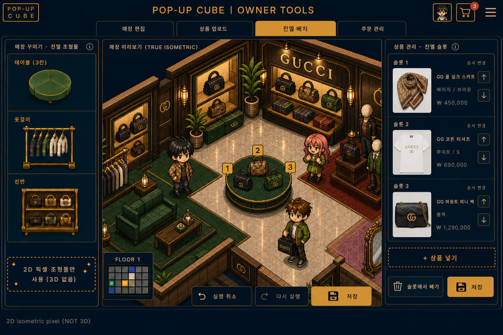
완성 시안스토어 관리 — 매장에 진열용 가구를 두고 상품을 끼워 넣기
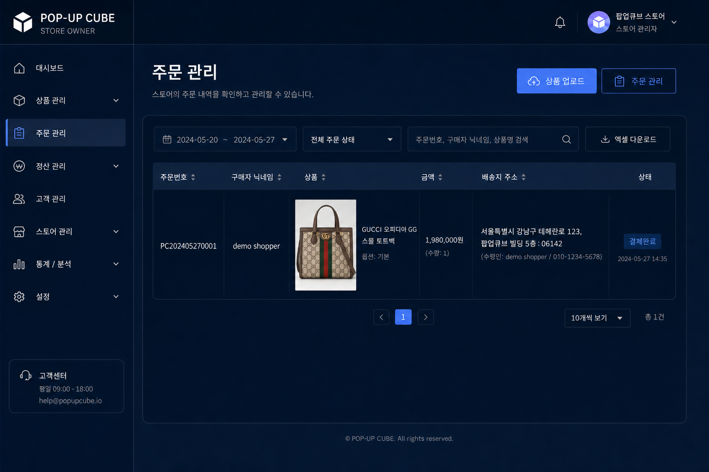
완성 시안스토어 관리 — 주문·배송지 확인
매장·상품·진열·주문 관리는 PC 웹에서 합니다.
앱의 스토어 관리자 로그인은 팝업에 들어가 쇼핑하는 용도이고, 본인 매장에서는 닉네임 왕관 등으로 구분됩니다.
7. 구현 검토용 브리핑 (대표님·개발팀 논의용)
아래는 확정 기술 스택이 아니라, 이런 식으로 구현할 수 있는 방법을 정리한 검토 자료입니다.
실제 도구·일정·비용은 개발팀과 상의해 결정하면 됩니다.
7-1. 실사와 픽셀 — 한 상품, 두 가지 이미지
용도
이미지
노출 위치
쇼핑·주문
실사 사진
앱 상세, 목록, 장바구니, 주문
팝업 월드
픽셀 스프라이트
진열 슬롯, 착용해보기, 월드 속 캐릭터
구현 시 참고할 수 있는 방향
상품 데이터에 실사 URL과 픽셀 스프라이트 URL을 함께 두는 방식이 자연스럽습니다.
변환 작업은 점주 전용으로 두고, 손님 앱은 저장된 결과만 불러오게 할 수 있습니다.
같은 원본을 다시 변환할 때는 이미지 해시로 중복 작업을 줄이는 방법도 있습니다.
7-2. 점주 2D 변환 — 사진만 올리면 변환 툴이 처리
점주는 실사 사진만 등록하고,
플랫폼이 제공하는 픽셀 변환 툴(변환 API)이 월드용 스프라이트를 만들어 주는 흐름을 검토할 수 있습니다.
소비자는 변환 API를 쓰지 않고, 점주가 승인한 결과만 월드·착용해보기에서 봅니다.
업로드 — 상품 등록 중 대표 실사 사진을 올립니다.
변환 — 「2D 월드용」탭에서 변환 툴/API가 진열·착용용 픽셀 스프라이트를 생성합니다.
미리보기·승인 — 점주가 결과를 확인한 뒤 승인하면 상품과 연결·출시됩니다.
비용·악용 방지 — 변환 API는 점주 전용, 이미지 해시 캐시·호출량 제한 등으로 비용을 줄이는 방안이 있습니다.
7-3. 착용 상품 — 방향별로 보이게 하는 방법
변환 API가 만든 스프라이트는 월드에서 캐릭터 방향(전·후·좌·우)에 맞게 보여야 합니다.
이를 위해 부위별 레이어를 겹쳐 그리는 방식(종이 인형 합성)과
방향별 스프라이트 시트 규격을 함께 검토할 수 있습니다.
구현 시 참고할 수 있는 방향
변환 툴/API 결과를 표준 스프라이트 시트 형태로 저장하는 방법이 있습니다.
상의·하의·신발·가방 등 부위마다 고정 앵커·겹침 순서를 두면, 걸을 때 방향·프레임만 바꿔 맞출 수 있습니다.
등·망토류는 뒤를 볼 때만 보이게 켜고 끄는 식으로 처리할 수 있습니다.
멀티플레이에서는 좌표·방향·장착 목록만 보내고, 각 기기에서 같은 규칙으로 그리게 할 수 있습니다.
착용해보기 팝업과 월드 안 캐릭터가 같은 변환 결과·같은 규칙을 쓰면 화면이 어긋나지 않습니다.
7-4. 구매와 장착 — 권한을 서버에서 확인
손님이 코드를 복사하거나 임의 이미지를 붙여 넣지 못하게 하려면,
구매·지급 이력을 서버가 확인한 뒤 장착을 허용하는 흐름을 검토할 수 있습니다.
구매가 확인되면 옷장에 자동으로 들어가고, 월드·착용해보기에서만 쓸 수 있게 하는 방식입니다.
위 내용은 시안·기획 단계의 논의용 브리핑입니다.
최종 기술 선택과 일정은 대표님 회사 개발팀과 맞춰 확정하면 됩니다.